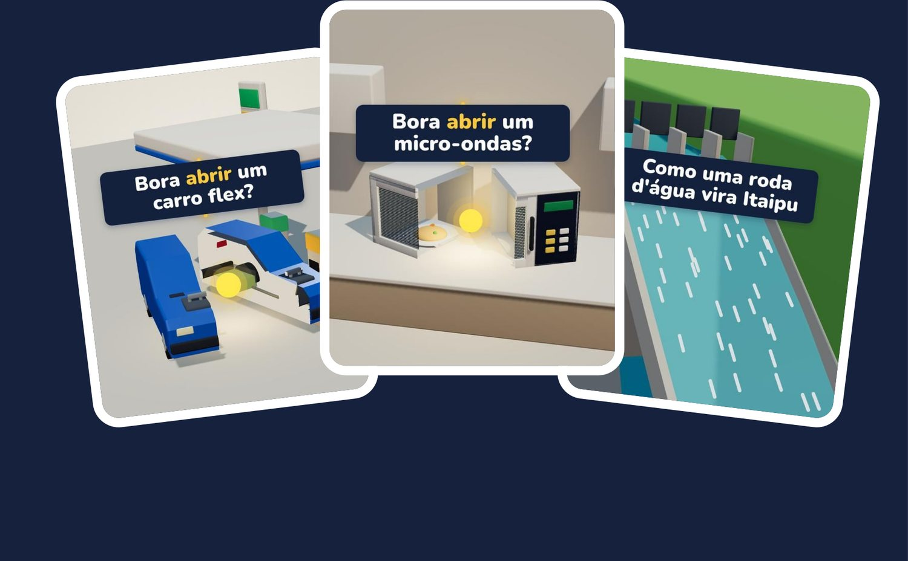
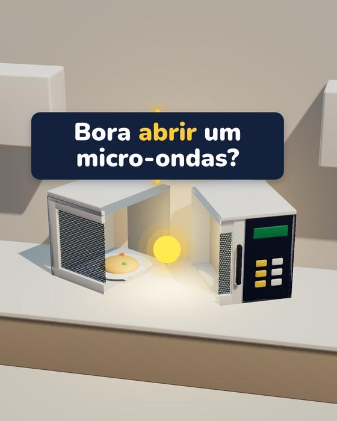
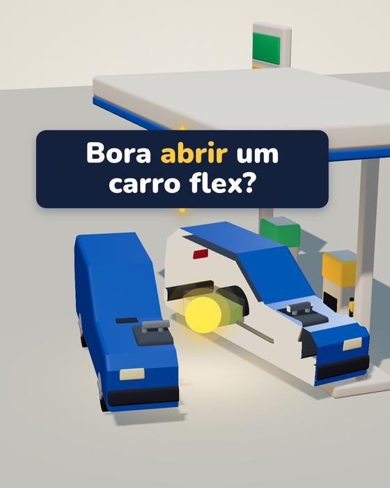
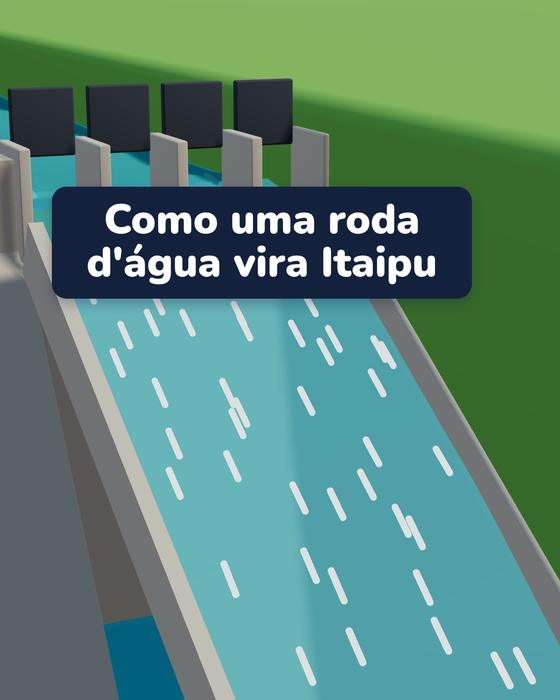

O passo a passo real do @abrindoascoisas, do tema ao vídeo agendado: roteiro, checagem de fatos, voz, legenda, 3D estilo maquete, música e post. Você não precisa saber programar. A IA escreve o código por você.
Quero meu primeiro vídeo · R$ 37 na semana de lançamento Depois, R$ 47 · Garantia de 7 dias · Acesso pela Kiwify
É um passo a passo de produção. Não prometo views, seguidores nem renda. Prometo o processo que eu uso todo dia, explicado de um jeito que você consegue repetir.
Vídeos nesse formato já passam de 30 milhões de views. Só os oito mais vistos de um canal que usa a mesma estrutura somam mais de 26 milhões no YouTube, todos publicados em outubro de 2026 (verificado em 30/10/2026). São números de outros vídeos, não promessa.
Cada capítulo usa como exemplo um vídeo que já foi ao ar: micro-ondas, carro flex e Itaipu.



[TEMA] pra preencher.Leu, testou e não era pra você? Dentro de 7 dias você pede o reembolso direto pela Kiwify e recebe 100% de volta. Não precisa explicar o motivo.
Não. Você vai abrir o terminal e colar o que a IA escrever. O livro mostra cada passo, e o capítulo 7 ensina a pedir e corrigir as cenas 3D.
Não. A renderização roda no computador (Windows, Mac ou Linux).
Não. Tudo foi pensado pra funcionar no plano grátis.
R$ 0 na trilha grátis, ou ~US$ 6/mês se quiser a voz do ElevenLabs.
Não. A IA gera o código do seu projeto, a partir dos prompts do capítulo 7. Assim o vídeo fica com a sua cara, e você entende o que está rodando.
Não dá pra prometer isso, e desconfie de quem promete. O livro ensina a produzir bem e com fatos certos. O alcance depende de tema, constância e de coisas que ninguém controla.
O primeiro demora mais, por causa do molde do 3D. Depois, algumas horas por episódio (estimativa).
São. Micro-ondas, carro flex e Itaipu foram feitos com esse processo para o @abrindoascoisas.
O capítulo 8 mostra onde achar música grátis, como ler a licença e como guardar o registro de cada faixa.
Garantia de 7 dias pela Kiwify, sem precisar dizer o motivo.